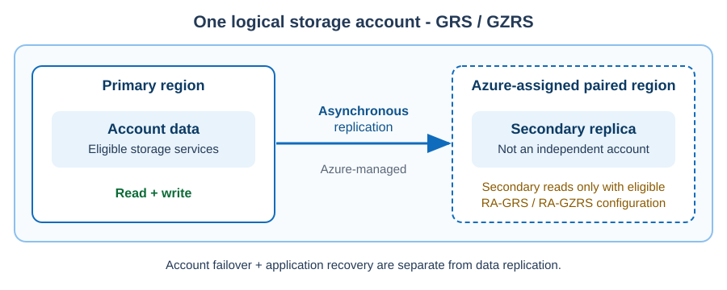
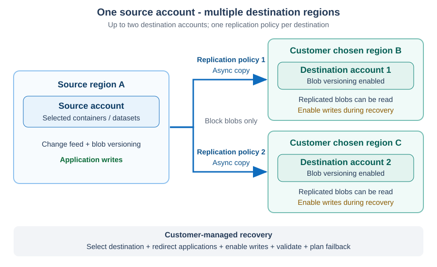
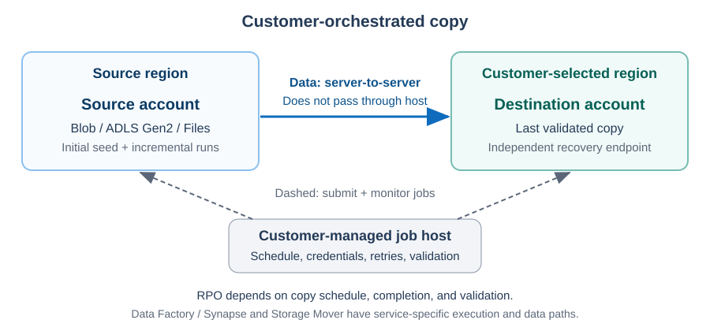
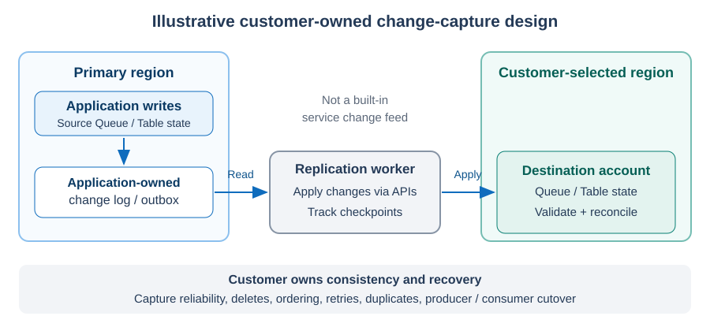

Summary#
- High availability - within a region: Default to ZRS where supported for zonal read/write availability. Use the replication patterns to evaluate additional options: GZRS for regional recovery, RA-GZRS for secondary reads, or customer-managed and partner replication for workload-specific control.
- Disaster recovery - paired regions: Platform-native replication, account failover, and failback are limited to Azure-assigned paired regions. Use GRS for eligible account-wide replication, or GZRS when zonal HA is also required. Read-access variants add eligible secondary reads during recovery. Plan and test potential data loss and recovery procedures; replication alone does not restore the workload.
- Disaster recovery - customer chosen regions: Use Blob Object Replication for eligible block blobs, customer-orchestrated copy for supported Blob, ADLS Gen2, or Files datasets, and customer-managed or partner replication for service-specific needs, including Queues and Tables. For Databricks workloads, evaluate workload-specific replication and recovery.
- Recovery from unwanted changes: Complement regional DR with isolated vaulted backup where supported, accounting for backup frequency and restore duration. Operational backup provides local logical recovery, not an independent regional recovery copy.
- Match protection to criticality: Use the HA and DR tier tables as planning candidates, not guarantees. Validate RTO, RPO, application dependencies, endpoint redirection, and recovery procedures; asynchronous replication and scheduled backups do not establish near-zero regional RPO.
Platform-native geo-replication#
GRS and GZRS asynchronously replicate an eligible storage account to the Azure-assigned paired region. The secondary is a replica of the same logical account, not an independently configured destination account. A region pair alone does not establish support: confirm account type, service, redundancy, and regional availability.
| Scenario | Storage-account-level failover and failback support |
|---|---|
| Paired regions | Supported for customer-managed and Microsoft-managed failover and failback, subject to account, service, and feature eligibility. Includes Blob, ADLS Gen2, Files, Queues, and Tables. |
| Non-paired regions | Not Supported for either customer-managed or Microsoft-managed storage-account-level failover and failback. Use independent accounts and a supported replication or copy pattern instead. |
Microsoft-managed failover is a Microsoft-directed regional disaster action, not an operation customers can request for an individual storage account. Use customer-managed failover and failback to plan and test workload recovery.
Read-access variants, RA-GRS and RA-GZRS, expose a separate secondary read endpoint for supported services. They do not make the secondary writable. Evaluate customer-managed planned and unplanned failover and failback separately from replication; eligibility and recovery behavior vary.
High Availability scenarios#
For Azure Storage, high availability (HA) means keeping reads and writes available through routine infrastructure faults and availability-zone disruptions within a region.
Note
Default to ZRS. Start with zone-redundant storage (ZRS) where supported: it synchronously replicates data across availability zones. GZRS combines this zonal foundation with asynchronous cross-region replication. Design cross-region continuity only after within-region HA is addressed. See Data redundancy - Azure Storage.
The options below are organized by workload criticality tier to help you evaluate storage solutions in your own context. Assess each option against your business requirements, recovery objectives, supported storage services, cost, and operational capabilities; the tier alone does not determine the right solution. For further guidance, see Develop a disaster recovery plan for multi-region deployments.
| Criticality tier | Paired regions | Customer chosen regions |
|---|---|---|
| Tier 0 - Mission Critical RTO seconds / RPO near zero |
|
|
| Tier 1 - Business Critical RTO / RPO minutes |
|
|
| Tier 2 - Business Operational RTO / RPO hours |
|
|
| Tier 3 - Administrative RTO hours-days / RPO hours |
|
Disaster Recovery scenarios#
For Azure Storage, disaster recovery (DR) means restoring a usable data copy and application access after a regional outage, destructive change, or other major disruption. Regional DR typically involves cross-region replication, failover or endpoint redirection, recovery validation, and failback. Backup complements this by recovering a retained point in time; whether it can recover a regional outage depends on where recovery copies and supported restore targets are available.
Important
Complement replication with isolated backup
Azure Backup provides vaulted backup for ADLS Gen2 and Azure Blobs. It provides an isolated, managed recovery copy with ransomware protection, administrative separation, long retention, and recovery to a retained point in time. This is a restore-based recovery option, not another live replication endpoint.
Backup frequency determines the RPO, which is usually measured in hours or more. Recovery takes longer because data must be restored from the vault. The published support matrix requires the vault to be in the source account's region. Do not assume backup or recovery in arbitrary customer chosen regions; validate any separately offered preview and its terms before relying on it.
Operational backup for blobs
Operational backup uses point-in-time restore, soft delete, change feed, and blob versioning to retain supported block-blob changes locally in the source account. It does not copy data into an isolated backup vault. Use it for supported accidental-deletion or corruption recovery, alongside the regional recovery pattern, not as a substitute for one. Validate restore scope, retained recovery points, and recovery duration.
Note
The options below are organized by workload criticality tier to help you evaluate storage solutions in your own context. Assess each option against your business requirements, recovery objectives, supported storage services, cost, and operational capabilities; the tier alone does not determine the right solution. For further guidance, see Develop a disaster recovery plan for multi-region deployments.
| Criticality tier | Paired regions | Customer chosen regions |
|---|---|---|
| Tier 0 - Mission Critical RTO seconds / RPO near zero |
|
|
| Tier 1 - Business Critical RTO / RPO minutes |
|
|
| Tier 2 - Business Operational RTO / RPO hours |
|
|
| Tier 3 - Administrative RTO hours-days / RPO hours |
|
|
For independent accounts, Blob Object Replication, customer-orchestrated copy, and customer-managed replication are also DR candidates for supported objects. Choose them using the replication patterns below, then prove the workload's RPO, RTO, and failback behavior.
Replication patterns#
Pattern 1: Geo-redundant storage#
- Deployment: One eligible account using GRS or GZRS, with an Azure-assigned paired secondary region.
- Objects: Blob, ADLS Gen2, Files, Queues, and Tables, subject to account and redundancy eligibility.
- Distribution: Azure-managed, asynchronous replication of account data. The destination region is fixed and replication is account-wide.
- During an outage: Follow the supported storage-account failover procedure. RA-GRS and RA-GZRS allow secondary reads for supported services before failover, not secondary writes.
- Best for / watch for: Simple account-wide protection when the paired destination is acceptable. Validate replication lag, failover eligibility, data-loss exposure, and application recovery separately.


See Azure Storage redundancy and failover and failback guidance. Evaluate Geo-Priority Replication where available for a predictable RPO SLA; this reference applies to Azure operated by 21Vianet, so confirm applicability to your cloud.
Pattern 2: Blob Object Replication#
- Deployment: Separate source and destination accounts in customer-selected, supported regions.
- Objects: Block blobs only; not append blobs, page blobs, hierarchical namespace-enabled accounts, Files, Queues, or Tables.
- Distribution: Azure asynchronously copies selected containers or datasets through object replication policies. Enable change feed on the source and blob versioning on both accounts. A source account can currently replicate to no more than two destination accounts.
- During an outage: The customer redirects applications to the destination and follows the service's procedure to enable writes. Configure and validate reverse replication before failback.
- Best for / watch for: Selective replication for resiliency, latency, or regulatory requirements. The destination already exists, but configuration, endpoint redirection, write enablement, and recovery validation remain customer responsibilities.


See Object replication for block blobs. For eligible workloads, evaluate Priority Replication for a predictable RPO SLA.
Pattern 3: Customer-orchestrated copy#
- Deployment: Separate regional accounts and a scheduled copy process using AzCopy, Azure Data Factory / Synapse, or a supported Storage Mover transfer.
- Objects: Blob, ADLS Gen2, and Azure Files datasets, subject to each tool's source, destination, protocol, and metadata support. Storage Mover support described below is specific to Blob and ADLS Gen2 transfers.
- Distribution: Initial seeding followed by scheduled or incremental copies. Define change detection, deletion handling, retries, and destination validation.
- During an outage: Recover from the last successfully copied and validated data. The customer redirects applications and manages failback.
- Best for / watch for: Bulk movement, region expansion, planned relocation, or recovery objectives compatible with the copy schedule. A scheduled copy is not continuous low-RPO replication.


AzCopy
AzCopy is a command-line tool built and maintained by the Azure Storage team. It is a strong fit for petabyte-scale bulk seeding and scheduled incremental copies to customer chosen regions, especially for ADLS Gen2. Account-to-account copies use server-to-server APIs, so data does not pass through the client.
The customer deploys and maintains the execution environment, such as a VM, and owns authentication, scheduling, monitoring, retries, validation, and recovery.
Key characteristics:
- For optimal performance, keep each copy job below 10 million files. This is a sizing recommendation, not a hard object-count limit.
- Tune concurrent requests with
AZCOPY_CONCURRENCY_VALUEand benchmark against client resources and storage-account limits; do not assume a universal 3,000-request limit. - Run jobs across multiple clients or VMs to reach target throughput and IOPS, preferably one AzCopy instance per client.
- Use
--overwrite=ifSourceNewerfor incremental runs and--preserve-permissionsto carry ACLs where supported and authorized. Incremental copy does not propagate source deletions. - Retain job plans and logs so failed transfers can be retried with AzCopy job resume.
Choose an AzCopy execution approach based on scale and resiliency needs. These approaches are variations of Storage - Pattern 3:
| Execution approach | Pros | Cons |
|---|---|---|
| A - Sequential copy of the entire account | One command for initial and incremental copy; simplest to operate. | Sequential container creation; one large job can incur substantial tracking overhead. Retain job state to resume failures rather than restarting the entire copy. |
| B - Container-by-container from a single client | Smaller jobs; higher total scale; resume from the last successful container on failure. | More scripting to enumerate containers, partition large containers, and handle errors. |
| C - Parallel containers across multiple clients or VMs | All of B, plus faster copying through parallel VM instances. | Orchestration across VMs; more complex monitoring; can throttle the source or destination account under load. |
Azure Data Factory / Synapse pipelines
Use Copy activity in Azure Data Factory and Azure Synapse for orchestrated, incremental replication to a chosen region, especially for ADLS Gen2 where object replication is not available. Pipelines support scheduling, monitoring, and data transformation, but add development and operational overhead.
Define how the pipeline detects changed data, handles deletions and failed copies, and validates the destination. The customer owns pipeline configuration, credentials, integration-runtime selection, monitoring, and recovery testing; a successful copy run is not an end-to-end disaster recovery guarantee.
Storage Mover
Storage Mover supports secondary-account seeding, historical data movement, periodic synchronization, planned relocation, and region expansion. Validate the supported Blob or ADLS Gen2 source-to-target combination.
Moves include only the latest version of files. The process is batch-oriented rather than continuous; use it when an RPO measured in hours or days is acceptable, not for low-RPO workloads.
Pattern 4: Customer-managed service replication#
- Deployment: Separate regional accounts plus customer-operated replication logic, or a validated partner offering.
- Objects: The services explicitly supported by the implementation. For Queue and Table scenarios in customer chosen regions, implement replication using service APIs or application logic.
- Distribution: Capture changes through an application-owned mechanism and apply them to the destination. Define handling for updates, deletes, ordering, retries, and duplicates; do not assume a built-in change feed.
- During an outage: Reconcile the destination, manage producer and consumer cutover, redirect applications, and prevent conflicting writes. Test return to the original region.
- Best for / watch for: Requirements not met by native replication or copy tools. The customer owns infrastructure, ongoing operation, consistency, monitoring, and recovery, unless a partner contract explicitly assigns these responsibilities.


Pattern 5: Databricks replication and recovery#
Product-specific replication can preserve application metadata, consistency, and recovery semantics that generic storage replication cannot. Evaluate these options alongside Azure Storage services to reduce custom orchestration and improve end-to-end workload recovery.
For data lake workloads using Databricks, evaluate table-level cloning and managed disaster recovery alongside storage-level replication. Cloning can seed or refresh a secondary dataset, but it does not by itself recover the workspace, permissions, jobs, or application dependencies. Validate deep versus shallow clone behavior, supported table formats, destination support, and refresh procedures before treating a clone as an independent recovery copy.
- Delta Lake Clone
- Clone a table on Azure Databricks
- Clone a managed Iceberg table
- Incrementally clone Parquet and Apache Iceberg tables to Delta Lake
- Managed disaster recovery
Azure Storage partners#
When built-in replication, backup, or data-movement services cannot meet your workload requirements, use Azure Storage solutions from Microsoft partners to find validated offerings that extend Azure Storage capabilities.
Evaluate partner solutions against the following criteria:
- Workload fit: Confirm support for the required storage services, data formats, account scale, change rate, and destination regions.
- Recovery objectives: Validate RPO and RTO during normal operations, regional disruption, and large-scale recovery.
- HA and DR: Confirm support for continuous replication, backup recovery, failover, and failback.
- Security and compliance: Assess encryption, customer-managed keys, access controls, isolation, residency, and auditing.
- Operational ownership: Define deployment, monitoring, incident, validation, failover, and support responsibilities.
- Cost and scale: Include licensing, storage, transfer, compute, monitoring, testing, and operations.
Before production adoption, validate the solution through workload-representative performance testing and disaster recovery exercises. Confirm that recovery procedures address application dependencies, endpoint redirection, write enablement, data consistency, and failback, not only data replication.
Reference links#
- Azure Storage redundancy
- Object replication for block blobs
- Storage disaster recovery and account failover
- AzCopy performance and job sizing
- Copy activity in Azure Data Factory and Azure Synapse
- Transfer Azure Files data with AzCopy
- Azure Files connector for Azure Data Factory and Azure Synapse
- Storage Mover overview
- Azure Storage partner solutions
- ADLS vaulted backup support matrix